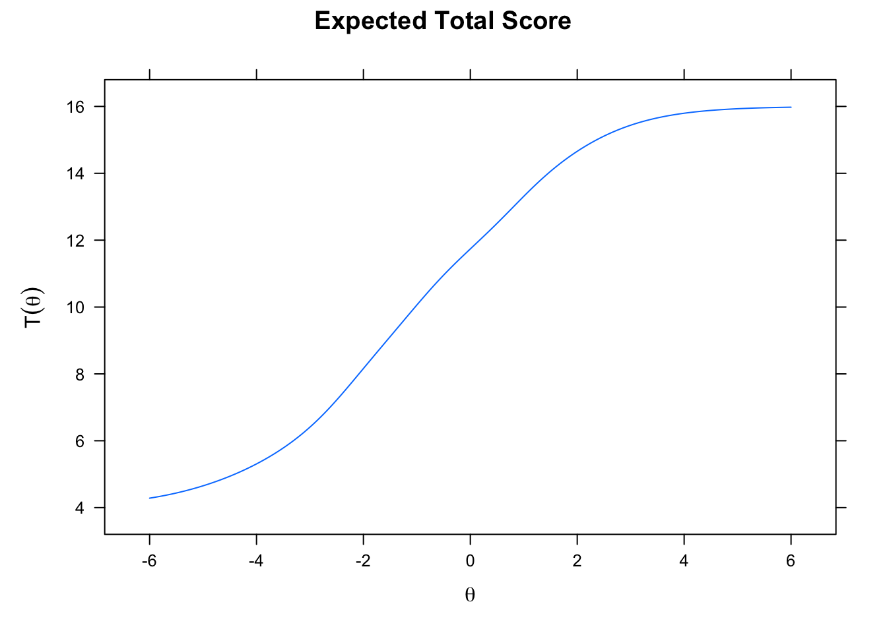
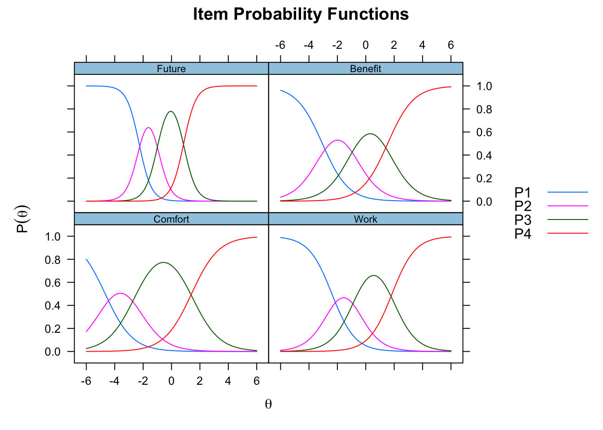

Item Response Theory (IRT) is a method by which item difficulty is assessed and used to measure latent factors. Classical test theory has a shortcoming where the test-taker’s ability and the difficulty of the item cannot be separated. Thus there is a question of universalisability outside of the instrument. Additionally, the models make some assumptions that mathematically may not be justified. In come IRT which handles some of these issues.
I am inspired by the blog post completed by the team at stitchfix (see details here) regarding using item response theory for “latent size.” It is a neat approach. I need to say upfront that I am not a trained psychometrician, psychologist, etc. I understand the statistics, but there are nuances of which I know I am ignorant. However, I know that these methods are certainly worthwhile and worth pursuing.
Similarly, I work with a lot of survey data. Classical test theory has some issues and having a robust construct validated through item response theory would be a good way to develop a more stable construct. Psychology/ sociological constructs are hard. This kind of research is just difficult with small signals and lots of noise in all of the measures. For this reason complicated methods are needed (generally speaking). This is why Bayesian methods and hierarchical modeling approaches are coming to vogue in the social sciences.
Anyways, back to IRT.
library(ltm)
Loading required package: MASS
Loading required package: msm
Loading required package: polycor
library(mirt)
Loading required package: stats4
Loading required package: lattice
Attaching package: 'mirt'
The following object is masked from 'package:ltm':
Science
── Conflicts ────────────────────────────────────────── tidyverse_conflicts() ──
x dplyr::filter() masks stats::filter()
x dplyr::lag() masks stats::lag()
x dplyr::select() masks MASS::select()
I am going to load the mirt and ltm packages for use here (Chalmers 2012), (Rizopoulos 2006). The primary data set with Science. Here a preview of the data in the dataset of 392 respondents and 4 items.
head(Science) %>% knitr::kable()
Comfort
Work
Future
Benefit
4
4
3
2
3
3
3
3
3
2
2
3
3
2
2
3
3
4
4
1
4
4
3
3
Classical Methods
In a clasical methodology we could do some factor analysis and see how many latent variables we have in the items. I’ll use the n_factors function from the psycho package. This function applies ten different factor methods and then shows how many of the methods support a given number of factors.
Variables detected as ordinal: Comfort; Work; Future; Benefit
efa$Analysis
Eigenvalues Prop Cumu Par.Analysis Pred.eig OC Acc.factor
1 2.0188352 0.5047088 0.5047088 1 1.1236282 (< OC) NA
2 0.9088057 0.2272014 0.7319102 1 0.7072366 0.7944225
3 0.5931986 0.1482996 0.8802099 1 NA 0.2015691
4 0.4791606 0.1197901 1.0000000 1 NA NA
AF
1 (< AF)
2
3
4
Here the plurality of the methods shows that there is one factor in the items with the plurality of the votes (supported by 8/10 methods).
We could also look at Cronbach’s \(\alpha\) or tau equivalence reliability. This metric is subject to the number of items and the average item intercorrelation so it can be “cheated” but it is useful to perform.
So alpha isn’t great. Ideally this value is > 0.7.
IRT
Now let’s go to IRT! For this instance there isn’t a correct answer per say like on the SAT. That being said a correct answer is viewed as the most difficult item in regard to the latent trait, typically one end of the scale (strong agree or disagree or frequent).
So now using a graded response model:
lmod <- ltm::grm(Science, IRT.param =FALSE)
Warning in seq.default(-3, 3, length = n): partial argument match of 'length' to
'length.out'
summary(lmod)
Warning: partial match of 'coef' to 'coefficients'
Now the really cool thing is to look at the item characteristic curves.
plot(mmod)

And the individual ICCs…
plot(mmod, type ="trace")

I hope to go into detail soon, but what these plots allow us to see if the individual item difficulty and the items ability to discrinimate a latent trait. This means how well can it separate out the latent factor from each item. And all this to say, once the items have been validated you can easily score the participants for the presence of the latent factor (yahoo!).
Warning: `as_data_frame()` was deprecated in tibble 2.0.0.
Please use `as_tibble()` instead.
The signature and semantics have changed, see `?as_tibble`.
This warning is displayed once every 8 hours.
Call `lifecycle::last_lifecycle_warnings()` to see where this warning was generated.
subject
F1
1
0.4015613
2
0.0520324
3
-0.8906436
4
-0.8906436
5
0.7653806
6
0.6695350
References
Chalmers, R. Philip. 2012. “mirt: A Multidimensional Item Response Theory Package for the R Environment.”Journal of Statistical Software 48 (6): 1–29. https://doi.org/10.18637/jss.v048.i06.
Rizopoulos, Dimitris. 2006. “Ltm: An r Package for Latent Variable Modelling and Item Response Theory Analyses.”Journal of Statistical Software 17 (5): 1–25. http://www.jstatsoft.org/v17/i05/.
![]()